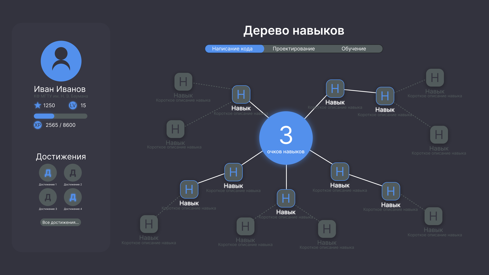

Превращение скучной зачетки в интерактивное дерево прогрессии, как в популярных играх.
Очки навыков, уровни (LVL) и полоса опыта (XP) формируют психологическую привязанность к платформе.
Бейджи за выполнение особых задач, которые формируют уникальное портфолио студента для работодателя.